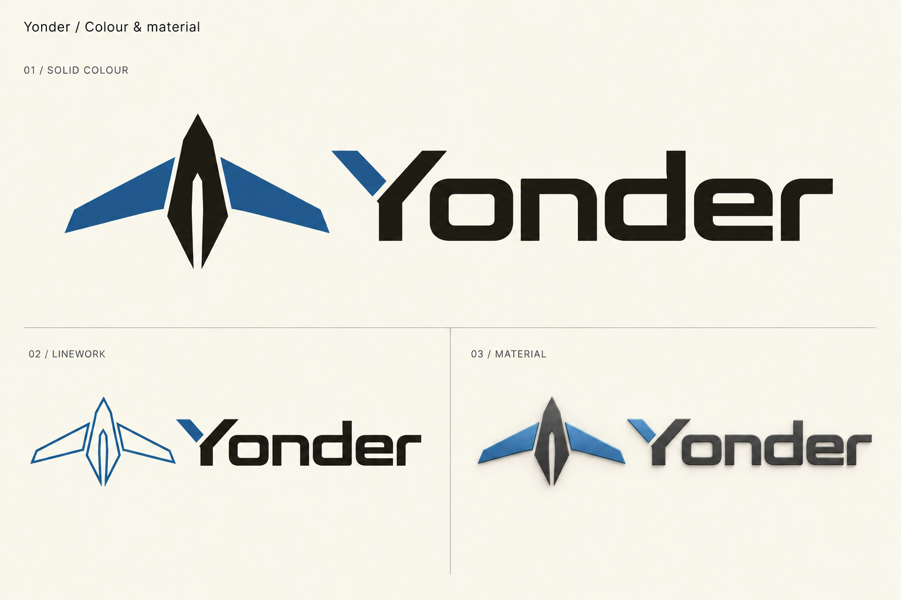

01 / Solid colour
Blue ties the wing panels to the detached arm of the Y. Graphite gives the remaining structure and lettering a clear foundation.
The airframe emblem, with the split Y

Blue ties the wing panels to the detached arm of the Y. Graphite gives the remaining structure and lettering a clear foundation.
The same airframe drawn as a controlled outline. Filled lettering preserves the wordmark’s presence.
A larger-format treatment with blue anodized-metal surfaces, satin graphite, and shallow depth.